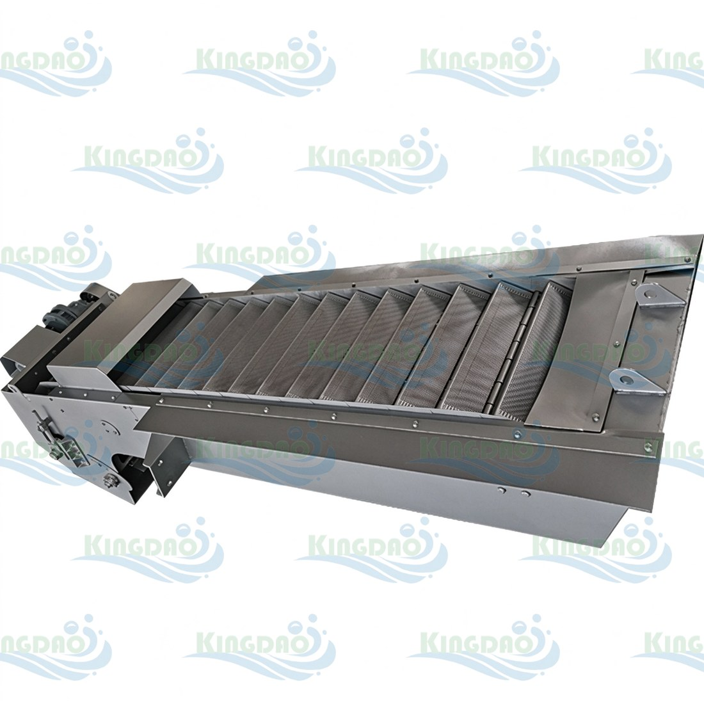
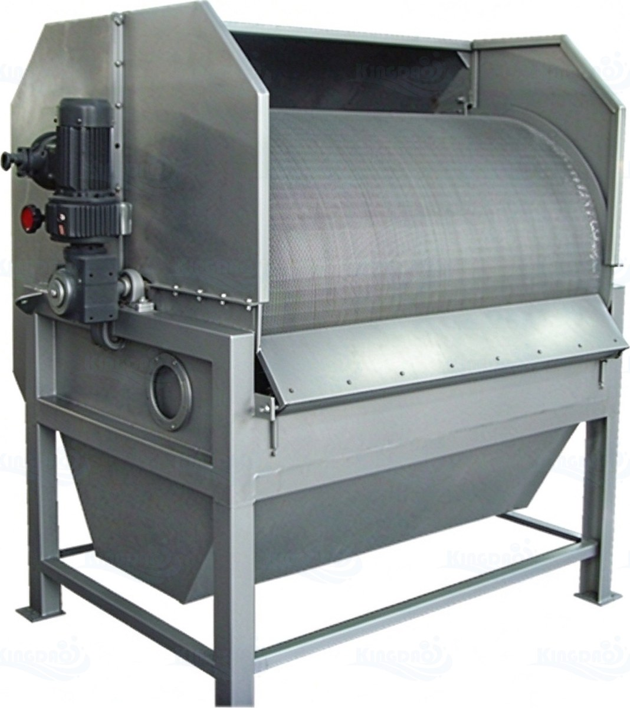
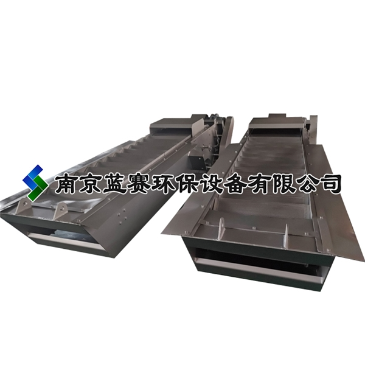
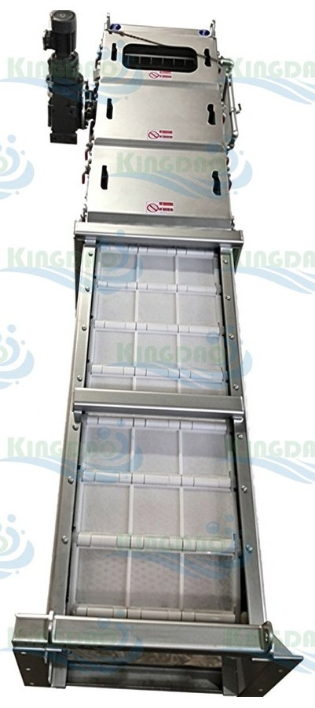

Where the flow carries a heavy screenings load, or where the bar spacing has to be small to protect a membrane or a fine-bubble diffuser, a hydraulic-driven fine screen handles the duty more reliably than a mechanical rake: the stroke force is set by the hydraulic unit and the drive does not stall on a jam.
The unit is mounted in the channel like a conventional bar screen, with the rake driven by hydraulic rams. Overload protection is inherent in the hydraulic circuit rather than in a mechanical shear pin.
Below about 10 mm the bar screen stops working — rags blind the bars and the head loss runs away. That is why fine screening uses perforated plate, wedge-wire drums or a stepped plate: the water passes through a hole, not between two bars.
| Type | Aperture | Channel width | Install angle | Capacity | Drive | Note |
|---|---|---|---|---|---|---|
| Stepped plate, rotary | 1 / 3 / 5 / 6 / 10 / 15 / 25 mm | 500–3,000 mm | 65°–90° (75° typical) | 50–5,000 m³/h | 0.75–3.0 kW | open area 30%+ above a flat screen of the same footprint |
| Stepped plate, rotary wiper | 1 / 3 / 5 / 6 / 10 / 15 / 20 mm | 500–3,000 mm | 65°–90° (70°–75° typical) | 100–5,000 m³/h | 0.55–3.0 kW | top brush + ≥0.4 MPa backwash, plate regeneration ≥85%, capture ≥98% |
| In-flow perforated plate | 3 / 5 / 6 mm typical | to civil drawing | vertical, 90° | by flow, e.g. 4 units at 20,000 m³/d each | IP55 / class F | separation ≥97%, head loss ≤300 mm at 40% blinding |
| Horizontal drum — wedge-wire cylinder | 0.5–5 mm slot | inline in channel | horizontal | by drum diameter and speed | gear motor with VFD | continuous separation, variable speed, cylinder resists blinding |
| Stepped fine screen — static steps | 1–10 mm | 500–2,000 mm | 60°–75° | by channel | none (static) | no drive, lowest maintenance |
Step screen for high solids loading; rotary membrane drum where the downstream membrane unit demands single-digit millimetre gaps.




MBR pre-screening · industrial intake · high screenings load
Flow, the medium, the installation and the discharge requirement — that is enough to select and quote.